Художественно принято; технически проверено локально. Версия 2.3.0 от 5 октября 2026. Игра не переключена на новый генератор.
Открыть живую мастерскую · Рецепт эталона JSON
Seed 240104, взрослое состояние, исходные параметры формы, остров и освещение общей сцены. Холст 794 × 558, ветер 0. Камера [14.35, 12.86, 20.13], цель [0.2, 2.96, 0.32]. У старого генератора профиль tenStageV2, у нового — принятый сценарий.
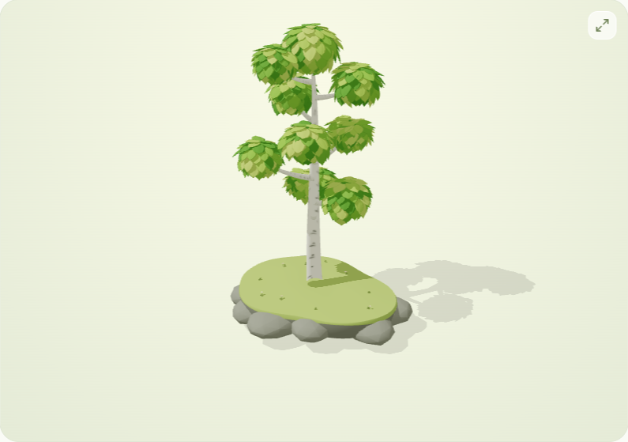
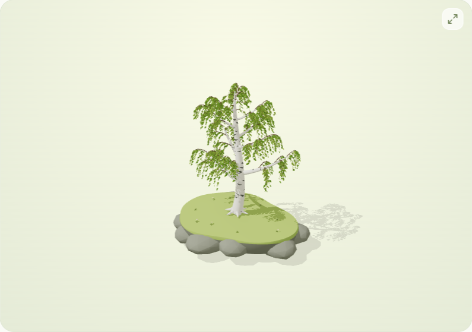
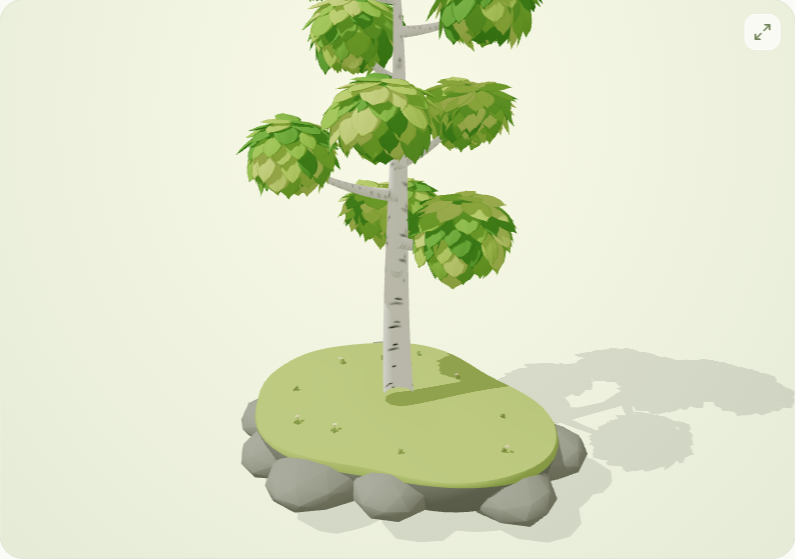
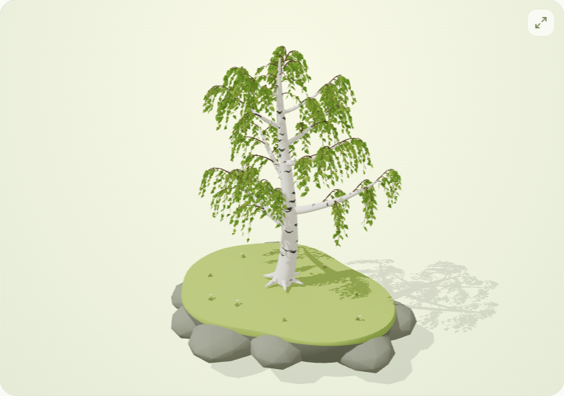
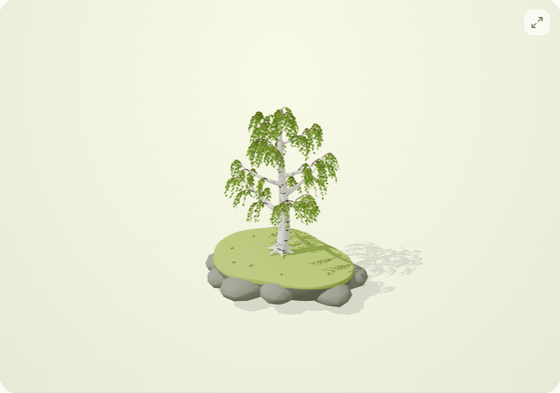
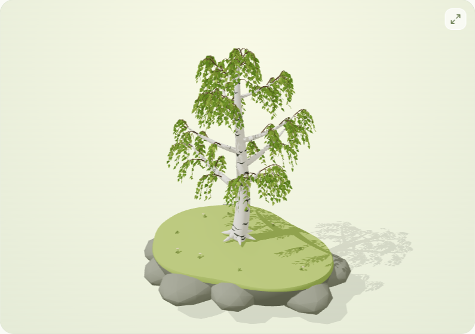
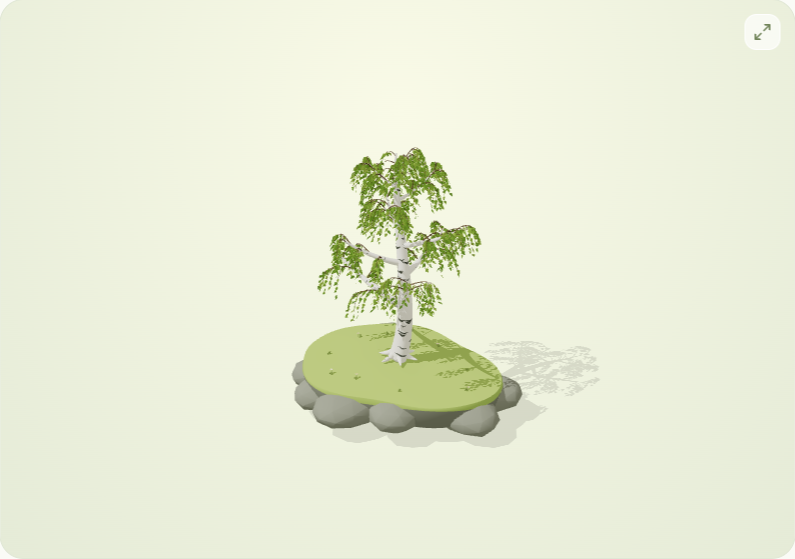
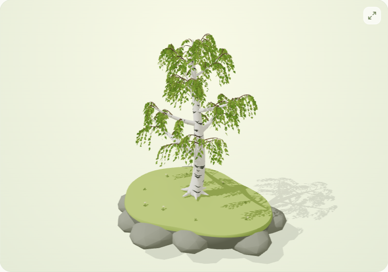
Автокадр, стадии 1, 3, 6, 8 и 10. Первая стадия остаётся мелкой на острове.
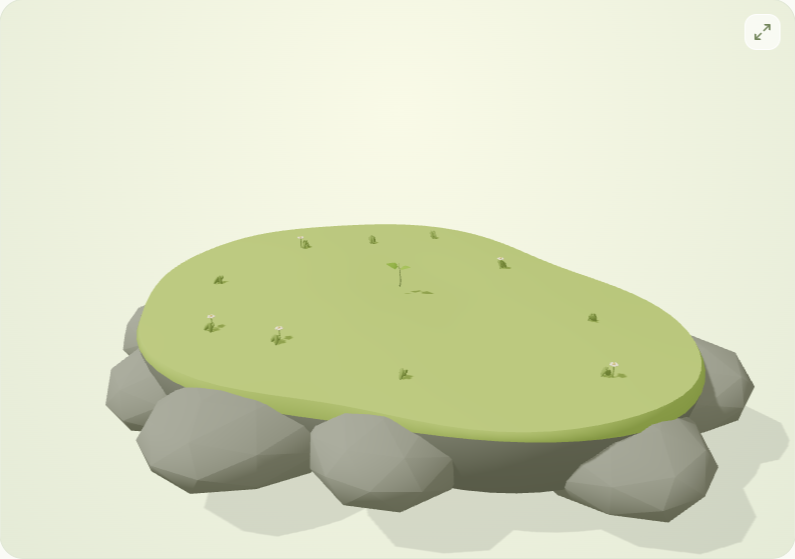
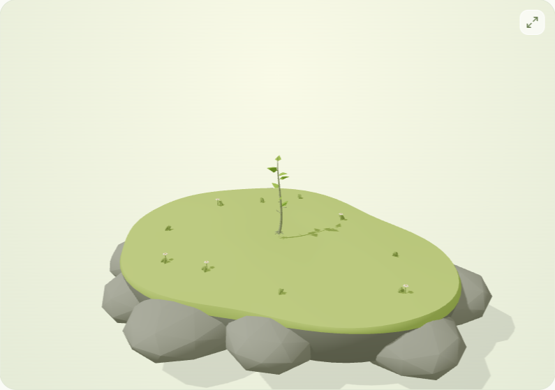
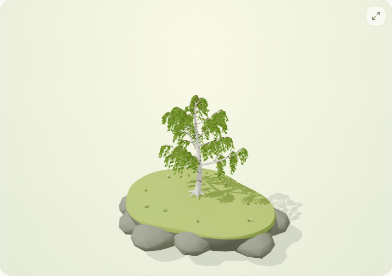
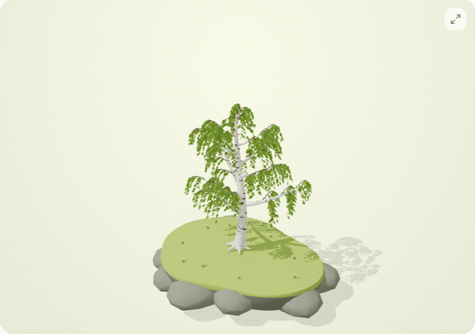
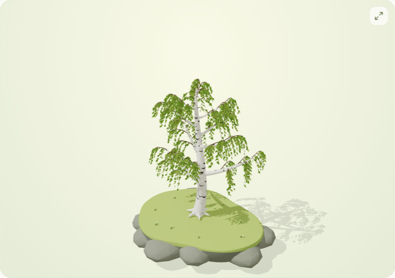
Ранний полив — 1×, автокадр. Полный рост — девять последовательных поливов, 2×, фиксированная камера. Ветер — сила 60%, направление 45°, скорость 2×, туча удержана. Видеозаписи холста имеют прозрачный фон; здесь он светлый.
Самооценка основана на просмотре снимков и последовательностей кадров, извлечённых из записей. Технические проверки описаны в журнале проекта. Физический телефон не испытывался.